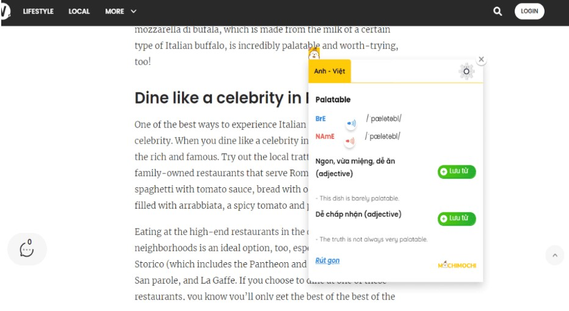

1. Đưa tiếng Anh vào cuộc sống hằng ngày
Trong tiếng Anh có thành ngữ “Use it or lose it”

2. Học từ vựng theo phong cách “mưa dầm thấm lâu”
Từ vựng chắc chắn là thành tố cơ bản và quan trọng nhất

3. Học ngữ pháp một cách có chọn lọc
Ngữ pháp là yếu tố rất được chú trọng

4. Ghi âm lại phát âm tiếng Anh
Trong quá trình đó, hãy thu âm và nghe lại nhiều lần để đảm bảo bạn có thể sửa sai kịp thời.

5. Xem video tiếng Anh theo chủ đề yêu thích
Xem các video tiếng Anh là một cách luyện nghe nói và nạp từ mới tiếng Anh rất hiệu quả.
6. Nghe mọi thứ bằng tiếng Anh
Bước 4: Cuối cùng là xem lại và tắt phụ đề.

7. Dành 15 phút luyện nói tiếng Anh mỗi ngày
Kỹ năng nói là một trong hai kỹ năng sả

8. Đọc báo, truyện tiếng Anh trực tuyến
Muốn sử dụng tiếng Anh hay và tự nhiên, bạn .
9. Tạo thói quen viết những gì bạn nghĩ bằng tiếng Anh
Viết là một kỹ năng khó, đòi hỏi n
10. Tham gia cộng đồng học tiếng Anh trực tuyến
Bên cạnh các yếu tố chuyên môn, việc giữ cho mình một th

Trên đây là 10 bí quyết tự học tiếng Anh đã được kiểm chứng